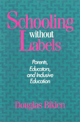

<body bgcolor="#FFFFFF" text="#000000" link="#0000FF" vlink="#CC0000" alink="#CC0000"><center><hr width="350" size="1" align="center" noshade>How people who have been labeled "disabled" might become full participants in different areas of society<hr width="350" size="1" align="center" noshade><p><a href="https://cdcshoppingcart.uchicago.edu/Cart/ChicagoBook.aspx?ISBN=9780877228752&&PRESS=temple" target="_top">Buy this book!</a> | <a href="https://cdcshoppingcart.uchicago.edu/Cart/Cart.aspx?PRESS=temple" target="_top">View Cart</a> | <a href="https://cdcshoppingcart.uchicago.edu/Cart/Cart.aspx?PRESS=temple" target="_top">Check Out</a></p><p></p></center><!--none//--><h1>Schooling Without Labels</h1>
<H2>Parents, Educators, and Inclusive Education</H2>
<h3>Douglas Biklen</h3>
<P>cloth 0-87722-875-2 $89.50, Jan 92, <FONT COLOR=#990033>Out of Stock Unavailable</FONT>
<br>paper 0-87722-876-0 $33.95, Jan 92, <FONT COLOR=#990033>Available</FONT>
<br>Electronic Book 1-43990-366-2 $33.95 <FONT COLOR=#990033>Out of Stock Unavailable</FONT>
<BR> 210 pp
</P><BLOCKQUOTE><I>"This book has great potential for effectively presenting and championing a vision of education (and more generally of society) in which those with and without disabilities can live and learn together. I see this book as a 'call to arms,' ...and one to go back to again and again in order to reflect upon what we should be doing with all of our children."</I>
<br>&#151<b>Paul C. Higgins</b>, University of South Carolina<I></I></BLOCKQUOTE>
<p>Douglas Biklen closely examines the experiences of six families in which children with disabilities are full participants in family life in order to understand how people who have been labeled disabled might become full participants in the other areas of society as well. He focuses on the contradictions between what some families have achieved, what they want for their children, and what society and its social policies allow. He demonstrates how the principles of inclusion that govern the lives of these families can be extended to education, community life, and other social institutions.
<p>The parents who tell their stories here have actively sought inclusion of their children in regular schools and community settings; several have children with severe or multiple disabilities. In discussing issues such as normalization, acceptance, complete schooling, circles of friends, and community integration, these parents describe the challenge and necessity of their children's "leading regular lives."
<BR>&nbsp;<h2>Contents</h2><P>
<p>Preface
<br>1. Achieving Regular Lives
<br>2. The Inclusion Philosophy
<br>3. Escape from Client Status
<br>4. The Myth of Clinical Judgment
<br>5. Two Students, One Myth
<br>6. A Case of Inclusion: Individual or Schoolwide Change?
<br>7. The Inclusive School
<br>8. Epilogue: Equality among Equals
<br>References
<br>Index
</P><BR>&nbsp;<H2>About the Author(s)</H2>
<P><b>Douglas Biklen</b> is a Professor of Special Education and Director of the Division of Special Education and Rehabilitation at Syracuse University.</P>
<BR><H2>Subject Categories</H2>
<p><A HREF="/tempress/disability.html" TARGET="_top">Disability Studies</a>
<BR><A HREF="/tempress/education.html" TARGET="_top">Education</a>
</p>
<BR><h2 class="inpageheading">In the series</H2>
<P><I><a href="http://www.temple.edu/tempress/health_society.html" onMouseOver="window.status='Click for other books in this series!'; return true;" onMouseOut="window.status=''; return true;" target="_top">Health, Society, and Policy</a></i>, edited by Sheryl Ruzek and Irving Kenneth Zola.
</p><p>No longer active.<p><i>Health, Society and Policy</i>, edited by Sheryl Ruzek and Irving Kenneth Zola, takes a critical stance with regard to health policy and medical practice, ranging broadly in subject matter. Backlist titles include books on the legal and professional status of midwifery, the experience and regulation of kidney transplants, the evolution of federal law on architectural access, and a political/ethical argument for making the community responsible for universal access to health care.</p>
<p align="center"><a href="https://cdcshoppingcart.uchicago.edu/Cart/ChicagoBook.aspx?ISBN=9780877228752&&PRESS=temple" target="_top">Buy this book!</a> | <a href="https://cdcshoppingcart.uchicago.edu/Cart/Cart.aspx?PRESS=temple" target="_top">View Cart</a> | <a href="https://cdcshoppingcart.uchicago.edu/Cart/Cart.aspx?PRESS=temple" target="_top">Check Out</a></p><p><font face="Arial" size="1"><a href="copyright.html" onMouseOver="window.status='Web Copyright Policy';return true;" onMouseOut="window.status=''" title="Web Copyright Policy">&copy;</a> 2015 <a href="http://www.temple.edu" target="new" onMouseOver="window.status='Link to Temple University home page';return true;" onMouseOut="window.status=''" title="Link to Temple University home page">Temple University</a>. All Rights Reserved. http://www.temple.edu/tempress/titles/802_reg.html</font></p>